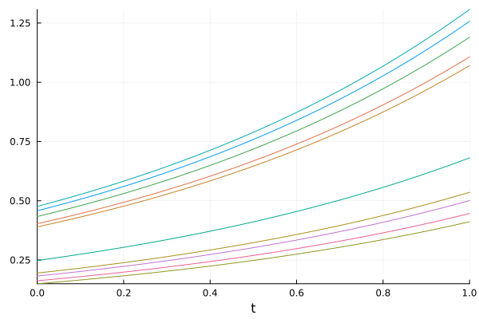
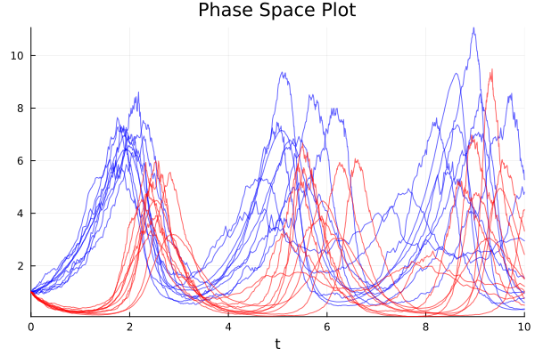
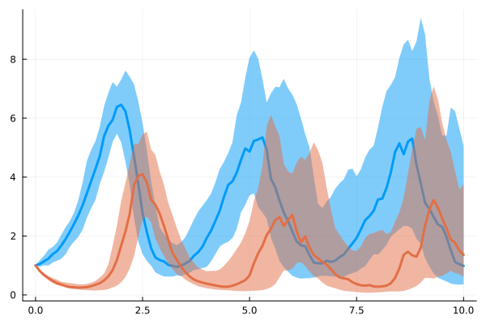
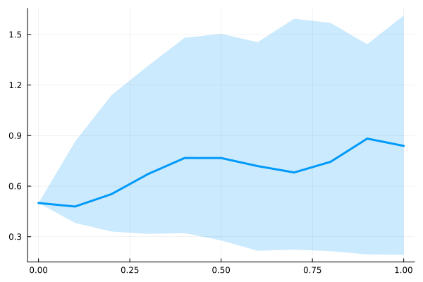
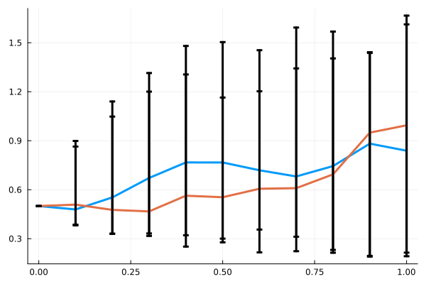
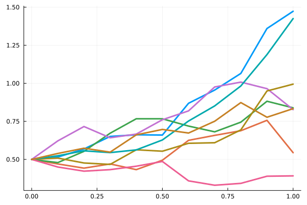

Parallel Ensemble Simulations Interface
Performing Monte Carlo simulations, solving with a predetermined set of initial conditions, and GPU-parallelizing a parameter search all fall under the ensemble simulation interface. This interface allows one to declare a template AbstractSciMLProblem, customize it for each of trajectories runs, solve those trajectories in parallel batches, reduce the solutions down to specific answers, and compute summary statistics on the results.
Performing an Ensemble Simulation
Building a Problem
SciMLBase.AbstractEnsembleProblem — Type
abstract type AbstractEnsembleProblem <: SciMLBase.AbstractSciMLProblemBase interface for ensemble problems.
An AbstractEnsembleProblem describes many related solves generated from a template problem. Concrete subtypes should expose the template problem, a trajectory-generation hook, an output hook, a batch reduction hook, and any initial reduction state needed by ensemble solvers. The standard concrete implementation is EnsembleProblem.
SciMLBase.EnsembleProblem — Type
struct EnsembleProblem{T, T2, T3, T4, T5} <: SciMLBase.AbstractEnsembleProblemContainer for a template problem and the user hooks used to run an ensemble of related SciML solves.
An EnsembleProblem is solved by repeatedly calling prob_func(prob, ctx) to construct the trajectory-specific problem, solving that problem with the requested numerical algorithm, passing the result through output_func(sol, ctx), and combining batches with reduction(u, data, I). The ctx argument is an EnsembleContext that identifies the trajectory and carries per-trajectory RNG state when rng or seed is supplied to solve.
Constructor
EnsembleProblem(prob::AbstractSciMLProblem;
output_func = (sol, ctx) -> (sol, false),
prob_func = (prob, ctx) -> prob,
reduction = (u, data, I) -> (append!(u, data), false),
u_init = [], safetycopy = prob_func !== DEFAULT_PROB_FUNC)Positional Arguments
prob: The canonical problem used as the template for each trajectory.
Keyword Arguments
prob_func: A function(prob, ctx)that modifies the problem for each trajectory.ctxis anEnsembleContextprovidingctx.sim_id(unique id1:trajectories),ctx.repeat(rerun counter, starts at1),ctx.rng(per-trajectory RNG ornothing),ctx.sim_seed, andctx.master_rng.prob_funcmust preserve the problem type ofprob; for example, aJumpProblemmust remain aJumpProblem, anODEProblemmust remain anODEProblem.output_func: A function(sol, ctx)that determines what is saved from each trajectory. It returns(out, rerun), whereoutis stored in the batch output andrerunrequests that the same trajectory be rerun withctx.repeatincremented.reduction: A function(u, data, I)that combines the current accumulatoruwith the outputsdatafrom the trajectory index rangeI. It returns(new_u, converged), whereconverged=truestops the ensemble early.u_init: The initial accumulator passed toreduction. Whennothing, the accumulator is initialized from the first batch output.safetycopy: Determines whether a safetydeepcopyis called on theprobbefore theprob_func. By default, this is true for any user-givenprob_func, as without this, modifying the arguments of something in theprob_func, such as parameters or caches stored within the user function, are not necessarily thread-safe. If you know that your function is thread-safe, then setting this tofalsecan improve performance when used with threads. For nested problems, e.g., SDE problems with custom noise processes,deepcopymight be insufficient. In such cases, use a customprob_func.
Example
function prob_func(prob, ctx)
remake(prob, u0 = randn(ctx.rng, length(prob.u0)))
end
output_func(sol, ctx) = (sol[end, 2], false)
ensemble_prob = EnsembleProblem(prob; prob_func, output_func)SciMLBase.WeightedEnsembleProblem — Type
WeightedEnsembleProblem(ensembleprob, weights)
WeightedEnsembleProblem(args...; weights, kwargs...)Associate an EnsembleProblem with one weight per trajectory.
The direct constructor wraps an existing ensemble problem. The keyword constructor forwards args and kwargs to EnsembleProblem, verifies that weights sum to one, and verifies that their length matches the generated problem collection.
Arguments
ensembleprob: The ensemble problem whose trajectories are weighted.weights: AnAbstractVectorcontaining one weight per trajectory.
Keywords
weights: Required by the forwarding constructor.kwargs...: Forwarded toEnsembleProblem.
Fields
ensembleprob: The wrapped ensemble problem.weights: The trajectory weights.
Returns
WeightedEnsembleProblem: A wrapper that delegates ordinary ensemble-problem properties and exposesweights.
Throws
AssertionError: The forwarding constructor throws when the weights do not sum to one or their length does not match the generated problem collection.
Example
ensembleprob = EnsembleProblem([:first, :second])
weighted = WeightedEnsembleProblem(ensembleprob, [0.25, 0.75])
weighted.weightsSciMLBase.DEFAULT_PROB_FUNC — Function
DEFAULT_PROB_FUNC(prob, ctx)Default prob_func for EnsembleProblem. It returns the template problem unchanged for every trajectory, so all trajectory-specific variation must come from solver randomness, callbacks, or other solve-time state.
SciMLBase.DEFAULT_OUTPUT_FUNC — Function
DEFAULT_OUTPUT_FUNC(sol, ctx)Default output_func for EnsembleProblem. It stores the full solution object from each trajectory and returns false for the rerun flag, meaning the trajectory is accepted on the first completion.
SciMLBase.DEFAULT_REDUCTION — Function
DEFAULT_REDUCTION(u, data, I)Default ensemble reduction. It appends the current batch data to the accumulator u and returns false for the convergence flag, so the ensemble continues until all requested trajectories have been run.
WeightedEnsembleProblem delegates ordinary problem properties to its wrapped ensemble problem and adds the weights property:
Base.propertynames — Method
Base.propertynames(prob::WeightedEnsembleProblem) -> TupleReturn the delegated property names of prob.ensembleprob, followed by :weights.
This method defines the properties advertised to reflection and tab completion. The returned tuple may include :ensembleprob when the wrapped problem advertises it.
Base.getproperty — Method
Base.getproperty(prob::WeightedEnsembleProblem, name::Symbol)Return prob.weights, the wrapped prob.ensembleprob, or a property delegated to the wrapped ensemble problem.
Arguments
prob: The weighted ensemble wrapper.name::weights,:ensembleprob, or a property supported by the wrapped problem.
Returns
- The stored weights, wrapped problem, or delegated property value.
Throws
Errors from getproperty(prob.ensembleprob, name) propagate for unsupported delegated properties.
Solving the Problem
SciMLBase.__solve — Method
sim = solve(enprob, alg, ensemblealg = EnsembleThreads(), kwargs...)Solve an AbstractEnsembleProblem by running many trajectories of the template problem.
alg is the numerical algorithm used for each generated trajectory, while ensemblealg chooses the scheduling backend. Keywords that are not consumed by the ensemble layer are forwarded to each inner solve call, so common solver keywords such as saveat, tolerances, callbacks, and progress options retain their usual meaning for each trajectory.
The special ensemble keywords are:
trajectories: Required number of trajectories to run.batch_size: Number of trajectories processed beforeprob.reductionis called. Defaults totrajectories.pmap_batch_size: Batch size passed topmapfor distributed ensemble algorithms. Defaults todiv(batch_size, 100) > 0 ? div(batch_size, 100) : 1.progress_aggregate: Whether per-trajectory progress messages are aggregated into a single total progress message. Defaults totrue.seed: Master seed for reproducible ensemble solves. Pre-generates per-trajectory seeds.rng: Master RNG for reproducible ensemble solves. Takes priority overseed.rng_func: Custom per-trajectory RNG factory(ctx::EnsembleContext) -> AbstractRNG. Defaults todefault_rng_funcwhich seeds theTaskLocalRNG.
In threaded modes, ctx.master_rng is shared across tasks. A custom rng_func must not mutate it unless that mutation is thread-safe.
SciMLBase.EnsembleContext — Type
EnsembleContext{S, R, M}Contextual information about the current trajectory within an ensemble solve.
An EnsembleContext is passed to rng_func, prob_func(prob, ctx), and output_func(sol, ctx). It is the stable interface for selecting trajectory-specific data without relying on global counters or backend-specific worker state.
Fields
sim_id::Int: Unique trajectory index in1:trajectories.repeat::Int: Rerun counter, starting at1and incremented whenoutput_funcrequests a rerun.worker_id::Int:0for serial and threaded execution, orDistributed.myid()for distributed execution.sim_seed::S: Pre-generated seed for this trajectory, ornothing.rng::R: Per-trajectory RNG created byrng_func, ornothingwhilerng_funcitself is running.master_rng::M: User-provided master RNG, ornothing. Distributed modes set this tonothingto avoid serializing mutable RNG state to workers.
SciMLBase.generate_sim_seeds — Function
generate_sim_seeds(rng, seed, trajectories)Pre-generate an array of per-trajectory seeds from a master RNG.
If rng is provided it is used directly; otherwise Random.Xoshiro(seed) is constructed. The returned UInt64 values are stored in each EnsembleContext as ctx.sim_seed so serial, threaded, and distributed ensemble execution can create reproducible per-trajectory RNG state.
SciMLBase.default_rng_func — Function
default_rng_func(ctx::EnsembleContext)Default per-trajectory RNG factory.
When ctx.sim_seed is available, this seeds Julia's task-local default RNG and returns Random.default_rng(). ctx.rng is nothing when this function is called, since the returned RNG is what will be stored as ctx.rng for prob_func and output_func.
EnsembleAlgorithms
The choice of ensemble algorithm allows for control over how the multiple trajectories are handled. Currently, the ensemble algorithm types are:
SciMLBase.BasicEnsembleAlgorithm — Type
abstract type BasicEnsembleAlgorithm <: SciMLBase.EnsembleAlgorithmBase interface for built-in ensemble execution algorithms. A BasicEnsembleAlgorithm chooses how trajectories from an EnsembleProblem are scheduled: serially, on Julia threads, across Julia distributed workers, or with a split distributed/threaded strategy.
Concrete subtypes should document their execution backend, worker setup requirements, serialization assumptions, and random number behavior. They are passed as the ensemble algorithm in calls such as solve(ensembleprob, alg, ensemblealg; trajectories, kwargs...), while alg continues to select the numerical solver for each generated trajectory.
SciMLBase.EnsembleSerial — Type
struct EnsembleSerial <: SciMLBase.BasicEnsembleAlgorithmEnsemble execution algorithm that runs trajectories serially in the current Julia process.
EnsembleSerial has the lowest scheduling complexity and is useful for debugging, deterministic single-task execution, or small ensembles where parallel overhead dominates the solve time. Trajectories still receive distinct EnsembleContext values and can use per-trajectory RNG state when seed or rng is supplied to solve.
SciMLBase.EnsembleThreads — Type
struct EnsembleThreads <: SciMLBase.BasicEnsembleAlgorithmEnsemble execution algorithm that schedules trajectories on Julia threads in the current process.
EnsembleThreads is the default basic ensemble backend. It provides shared-memory parallelism with low overhead, but user hooks such as prob_func, output_func, and rng_func must be thread-safe. In particular, mutable objects captured by closures or shared through the template problem should not be mutated unless each trajectory receives independent storage.
SciMLBase.EnsembleDistributed — Type
struct EnsembleDistributed <: SciMLBase.BasicEnsembleAlgorithmEnsemble execution algorithm that distributes trajectory batches with Distributed.pmap.
EnsembleDistributed uses the available Julia worker processes; add workers with Distributed.addprocs before solving. The template problem, algorithms, callbacks, and ensemble hooks must be serializable and available on each worker. This backend is usually appropriate when each trajectory is relatively expensive, when trajectories allocate heavily, or when work should be spread across multiple machines. It can also help on a single machine when separate worker processes and garbage collectors outweigh distributed communication overhead.
SciMLBase.EnsembleSplitThreads — Type
struct EnsembleSplitThreads <: SciMLBase.BasicEnsembleAlgorithmEnsemble execution algorithm that combines distributed workers with threaded execution inside each worker process.
EnsembleSplitThreads uses the Julia distributed worker setup provided by the caller and then runs threaded batches on each worker. It is intended for node-based cluster layouts, for example one Julia worker per node with multiple local threads per worker. The same serialization requirements as EnsembleDistributed apply, and threaded hooks must also be thread-safe.
SciMLBase.AbstractEnsembleEstimator — Type
abstract type AbstractEnsembleEstimator <: SciMLBase.AbstractSciMLAlgorithmBase interface for algorithms that estimate ensemble quantities during an ensemble solve.
Concrete estimator algorithms can be used by ensemble workflows to decide when a Monte Carlo estimate has converged, how many trajectories are required, or how batch reductions should be interpreted. Subtypes should document the statistic they estimate, the stopping criterion, and the reduction state they require.
GPU Backends
GPU ensemble algorithms are extensions supplied by DiffEqGPU.jl rather than SciMLBase. EnsembleGPUArray() adapts trajectories to GPU arrays, while EnsembleGPUKernel(backend) compiles compatible solves into a device kernel. Supported problem features and backend constructors depend on DiffEqGPU and the selected GPU package; see the DiffEqGPU documentation for the current compatibility rules.
Choosing an Ensembler
For example, EnsembleThreads() is invoked by:
solve(ensembleprob, alg, EnsembleThreads(); trajectories = 1000)Solution Type
The resulting object is an EnsembleSolution, which includes the array of trajectory outputs.
SciMLBase.EnsembleSolution — Type
struct EnsembleSolution{T, N, S} <: SciMLBase.AbstractEnsembleSolution{T, N, S}Concrete solution container returned by ensemble solves.
The u field stores the accepted output for each trajectory after applying the ensemble problem's output_func. When output_func returns full SciML solutions, u is a collection of solution objects; when it returns reduced values, u stores those reduced values instead. elapsedTime records the wall time spent in the ensemble solve, converged records whether the reduction reported early convergence, and stats stores merged inner-solver statistics when available.
EnsembleSolution supports indexing and iteration through its stored u collection via the AbstractEnsembleSolution interface.
SciMLBase.EnsembleTestSolution — Type
struct EnsembleTestSolution{T, N, S} <: SciMLBase.AbstractEnsembleSolution{T, N, S}Container for ensemble runs against problems with analytic reference solutions.
EnsembleTestSolution extends the ordinary ensemble solution data with strong and weak error summaries computed by calculate_ensemble_errors. The u field stores the trajectory outputs, while errors, weak_errors, error_means, and error_medians store the per-error-key diagnostics collected across the ensemble. elapsedTime and converged carry the same meaning as in EnsembleSolution.
SciMLBase.WeightedEnsembleSolution — Type
struct WeightedEnsembleSolution{T1<:SciMLBase.AbstractEnsembleSolution, T2<:Number}Solution wrapper that associates an ensemble solution with trajectory weights.
The number of weights must match the number of stored trajectories. Weighted ensemble analysis utilities use the weights to form weighted summary statistics without changing the underlying unweighted solution object.
Plot Recipe
There is a plot recipe for an AbstractEnsembleSolution which composes all of the plot recipes for the component solutions. The keyword arguments are passed along. A useful argument to use is linealpha which will change the transparency of the plots. An additional argument is idxs which allows you to choose which components of the solution to plot. For example, if the differential equation is a vector of 9 values, idxs=1:2:9 will plot only the solutions of the odd components. Another additional argument is zcolors (an alias of marker_z) which allows you to pass a zcolor for each series. For details about zcolor see the Series documentation for Plots.jl.
Analyzing an Ensemble Experiment
Analysis tools are included for generating summary statistics and summary plots for an AbstractEnsembleSolution.
To use this functionality, import the analysis module via:
using SciMLBase.EnsembleAnalysisSciMLBase.EnsembleAnalysis — Module
EnsembleAnalysisNamespace for summary statistics over SciMLBase.AbstractEnsembleSolution trajectories. Import it with using SciMLBase.EnsembleAnalysis; its functions provide componentwise, timestep, timepoint, and time-series summaries, including weighted covariance operations where supported.
Time steps vs time points
For the summary statistics, there are two types. You can either summarize by time steps or by time points. Summarizing by time steps assumes that the time steps are all the same time point, i.e. the integrator used a fixed dt or the values were saved using saveat. Summarizing by time points requires interpolating the solution.
SciMLBase.EnsembleAnalysis.get_timestep — Function
get_timestep(sim, i)
Return a lazy iterator over sol.u[i] for every trajectory in an ensemble solution.
This is a step-index based accessor: it assumes that the ith saved value is the quantity to compare across trajectories. That is appropriate for fixed-step solutions or ensembles saved with common saveat values. Use get_timepoint when trajectories should be compared at a physical time through interpolation.
SciMLBase.EnsembleAnalysis.get_timepoint — Function
get_timepoint(sim, t)
Return a lazy iterator over sol(t) for every trajectory in an ensemble solution.
This is a time-point based accessor: each trajectory is evaluated at the same independent-variable value t, using the solution's callable interpolation interface. Use get_timestep when comparing the same saved index instead of the same physical time.
SciMLBase.EnsembleAnalysis.componentwise_vectors_timestep — Function
componentwise_vectors_timestep(sim, i)
Collect the values at saved step index i into componentwise trajectory vectors.
For scalar-valued trajectories, the result is a vector of scalar values. For array-valued trajectories, the result is a vector whose entries contain the values of one state component across all trajectories, preserving the component layout needed by the summary-statistic helpers.
SciMLBase.EnsembleAnalysis.componentwise_vectors_timepoint — Function
componentwise_vectors_timepoint(sim, t)
Collect interpolated values at time t into componentwise trajectory vectors.
For scalar-valued trajectories, the result is a vector of scalar values. For array-valued trajectories, the result is a vector whose entries contain the values of one state component across all trajectories, using the same component layout as componentwise_vectors_timestep.
Componentwise Statistics
SciMLBase.EnsembleAnalysis.componentwise_mean — Function
componentwise_mean(A)
Compute the arithmetic mean of a collection of scalar or array-valued observations componentwise.
For array-valued observations, every observation must have compatible axes and the returned mean has the same shape as an observation. The collection must be nonempty.
Arguments
A: An iterable of scalar or array-valued observations to average.
Returns
mean: The arithmetic mean. This is a scalar for scalar observations and an array with the observation shape for array-valued observations.
Examples
componentwise_mean([[1, 2], [3, 4]]) # [2.0, 3.0]SciMLBase.EnsembleAnalysis.componentwise_meanvar — Function
componentwise_meanvar(A; bessel)
Compute the arithmetic mean and variance of a collection of scalar or array-valued observations componentwise using Welford's algorithm.
For array-valued observations, every observation must have compatible axes and the returned mean and variance have the same shape as an observation. The collection must be nonempty. Fewer than two observations produce NaN instead of a (mean, variance) tuple.
Arguments
A: An iterable of scalar or array-valued observations from which to compute the statistics.
Keywords
bessel::Bool = true: Iftrue, use the sample-variance denominatorn - 1. Iffalse, use the population-variance denominatorn.
Returns
(mean, variance): A tuple containing the componentwise arithmetic mean and variance. Each entry is a scalar for scalar observations or an array with the observation shape for array-valued observations.
Examples
observations = [[1, 2], [3, 4]]
componentwise_meanvar(observations) # ([2.0, 3.0], [2.0, 2.0])
componentwise_meanvar(observations; bessel = false) # ([2.0, 3.0], [1.0, 1.0])Summary Statistics Functions
Single Time Statistics
The available functions for time steps are:
SciMLBase.EnsembleAnalysis.timestep_mean — Function
timestep_mean(sim, i)
Compute the ensemble mean at saved step index i.
For array-valued states, the returned value has the same shape as a single state and contains the componentwise mean across trajectories. For scalar states, the returned value is a scalar mean. Passing : computes the full step-indexed mean timeseries via timeseries_steps_mean.
SciMLBase.EnsembleAnalysis.timestep_median — Function
timestep_median(sim, i)
Compute the ensemble median at saved step index i.
For array-valued states, the result is reshaped to match the state at sim.u[1].u[i]; for scalar states, it is the scalar median across trajectories. Passing : computes medians for every saved step.
SciMLBase.EnsembleAnalysis.timestep_quantile — Function
timestep_quantile(sim, q, i)
Compute the componentwise quantile q at saved step index i.
q is passed to Statistics.quantile for each state component across trajectories. Array-valued states are reshaped to match the state at sim.u[1].u[i]; scalar states return a scalar quantile. Passing : computes the quantile for every saved step.
SciMLBase.EnsembleAnalysis.timestep_meanvar — Function
timestep_meanvar(sim, i)
Compute the ensemble mean and variance at saved step index i.
The result is (mean, variance), computed componentwise across trajectories with Bessel correction by the shared componentwise statistics helper. Passing : computes the full step-indexed mean and variance timeseries.
SciMLBase.EnsembleAnalysis.timestep_meancov — Function
timestep_meancov(sim, i, j)
Compute componentwise means and covariance between saved step indices i and j.
The result is (mean_i, mean_j, covariance), where each entry is scalar-valued for scalar states or shaped componentwise for array-valued states. Passing (:, :) computes the full step-indexed covariance matrix.
SciMLBase.EnsembleAnalysis.timestep_meancor — Function
timestep_meancor(sim, i, j)
Compute componentwise means and correlation between saved step indices i and j.
The result is (mean_i, mean_j, correlation), using the covariance and variance computed across trajectories. Passing (:, :) computes the full step-indexed correlation matrix.
SciMLBase.EnsembleAnalysis.timestep_weighted_meancov — Function
timestep_weighted_meancov(sim, W, i, j)
Compute componentwise weighted means and covariance between saved step indices i and j.
W supplies the trajectory weights used by the weighted covariance calculation. The result is (mean_i, mean_j, weighted_covariance). Passing (:, :) computes the full step-indexed weighted covariance matrix.
The available functions for time points are:
SciMLBase.EnsembleAnalysis.timepoint_mean — Function
timepoint_mean(sim, t)
Compute the ensemble mean at physical time t.
Each trajectory is evaluated with sol(t), so this requires a callable solution at t. For array-valued states, the result has the same shape as a single state; for scalar states, it is a scalar mean.
SciMLBase.EnsembleAnalysis.timepoint_median — Function
timepoint_median(sim, t)
Compute the componentwise ensemble median at physical time t.
Each trajectory is evaluated with sol(t). Array-valued states are reshaped to match a single saved state layout; scalar states return a scalar median.
SciMLBase.EnsembleAnalysis.timepoint_quantile — Function
timepoint_quantile(sim, q, t)
Compute the componentwise quantile q at physical time t.
Each trajectory is evaluated with sol(t), then Statistics.quantile is applied componentwise across trajectories.
SciMLBase.EnsembleAnalysis.timepoint_meanvar — Function
timepoint_meanvar(sim, t)
Compute the ensemble mean and variance at physical time t.
The result is (mean, variance), computed componentwise across interpolated trajectory values at t.
SciMLBase.EnsembleAnalysis.timepoint_meancov — Function
timepoint_meancov(sim, t1, t2)
Compute componentwise means and covariance between physical times t1 and t2.
Each trajectory is evaluated at both times. The result is (mean_t1, mean_t2, covariance).
SciMLBase.EnsembleAnalysis.timepoint_meancor — Function
timepoint_meancor(sim, t1, t2)
Compute componentwise means and correlation between physical times t1 and t2.
Each trajectory is evaluated at both times. The result is (mean_t1, mean_t2, correlation).
SciMLBase.EnsembleAnalysis.timepoint_weighted_meancov — Function
timepoint_weighted_meancov(sim, W, t1, t2)
Compute componentwise weighted means and covariance between physical times t1 and t2.
W supplies the trajectory weights used by the weighted covariance calculation. The result is (mean_t1, mean_t2, weighted_covariance).
Full Timeseries Statistics
Additionally, the following functions are provided for analyzing the full timeseries. The mean and meanvar versions return a DiffEqArray which can be directly plotted. The meancov and meancor return a matrix of tuples, where the tuples are the (mean_t1,mean_t2,cov or cor).
The available functions for the time steps are:
SciMLBase.EnsembleAnalysis.timeseries_steps_mean — Function
timeseries_steps_mean(sim)
Compute the ensemble mean at every saved step.
The result is a DiffEqArray with the same time vector as the first trajectory, where each saved value is the componentwise mean across trajectories at the same saved step index.
SciMLBase.EnsembleAnalysis.timeseries_steps_median — Function
timeseries_steps_median(sim)
Compute the ensemble median at every saved step.
The result is a DiffEqArray with the first trajectory's time vector and componentwise median values at each saved step index.
SciMLBase.EnsembleAnalysis.timeseries_steps_quantile — Function
timeseries_steps_quantile(sim, q)
Compute the componentwise quantile q at every saved step.
The result is a DiffEqArray with the first trajectory's time vector and componentwise quantile values at each saved step index.
SciMLBase.EnsembleAnalysis.timeseries_steps_meanvar — Function
timeseries_steps_meanvar(sim)
Compute the ensemble mean and variance at every saved step.
The result is (means, variances), where both entries are DiffEqArrays sharing the first trajectory's time vector.
SciMLBase.EnsembleAnalysis.timeseries_steps_meancov — Function
timeseries_steps_meancov(sim)
Compute the step-indexed matrix of componentwise mean/covariance summaries.
Entry (i, j) contains the result of timestep_meancov. This assumes saved step indices are comparable across trajectories.
SciMLBase.EnsembleAnalysis.timeseries_steps_meancor — Function
timeseries_steps_meancor(sim)
Compute the step-indexed matrix of componentwise mean/correlation summaries.
Entry (i, j) contains the result of timestep_meancor. This assumes saved step indices are comparable across trajectories.
SciMLBase.EnsembleAnalysis.timeseries_steps_weighted_meancov — Function
timeseries_steps_weighted_meancov(sim, W)
Compute the step-indexed matrix of componentwise weighted covariance summaries.
Entry (i, j) contains the weighted mean/covariance summary for saved step indices i and j using trajectory weights W.
The available functions for the time points are:
SciMLBase.EnsembleAnalysis.timeseries_point_mean — Function
timeseries_point_mean(sim, ts)
Compute the ensemble mean at each physical time in ts.
The result is a DiffEqArray whose time axis is ts and whose values are the componentwise means of sol(t) across trajectories.
SciMLBase.EnsembleAnalysis.timeseries_point_median — Function
timeseries_point_median(sim, ts)
Compute the componentwise ensemble median at each physical time in ts.
The result is a DiffEqArray over ts; each value is computed from the interpolated trajectory values at that time.
SciMLBase.EnsembleAnalysis.timeseries_point_quantile — Function
timeseries_point_quantile(sim, q, ts)
Compute the componentwise quantile q at each physical time in ts.
The result is a DiffEqArray over ts; each value is computed from the interpolated trajectory values at that time.
SciMLBase.EnsembleAnalysis.timeseries_point_meanvar — Function
timeseries_point_meanvar(sim, ts)
Compute the ensemble mean and variance at each physical time in ts.
The result is (means, variances), where both entries are DiffEqArrays over ts.
SciMLBase.EnsembleAnalysis.timeseries_point_meancov — Function
timeseries_point_meancov(sim, ts)
Compute the time-point covariance summary matrix for adjacent entries of ts.
This method pairs ts[1:end-1] with ts[2:end] and returns the same matrix form as timeseries_point_meancov(sim, ts1, ts2).
timeseries_point_meancov(sim, ts1, ts2)
Compute the time-point covariance summary matrix between two time collections.
Entry (i, j) contains the result of timepoint_meancov(sim, ts1[i], ts2[j]).
SciMLBase.EnsembleAnalysis.timeseries_point_meancor — Function
timeseries_point_meancor(sim, ts)
Compute the time-point correlation summary matrix for adjacent entries of ts.
This method pairs ts[1:end-1] with ts[2:end] and returns the same matrix form as timeseries_point_meancor(sim, ts1, ts2).
timeseries_point_meancor(sim, ts1, ts2)
Compute the time-point correlation summary matrix between two time collections.
Entry (i, j) contains the result of timepoint_meancor(sim, ts1[i], ts2[j]).
SciMLBase.EnsembleAnalysis.timeseries_point_weighted_meancov — Function
timeseries_point_weighted_meancov(sim, W, ts)
Compute the weighted covariance summary matrix for adjacent entries of ts.
This method pairs ts[1:end-1] with ts[2:end] and uses weights W for each trajectory.
timeseries_point_weighted_meancov(sim, W, ts1, ts2)
Compute the weighted covariance summary matrix between two time collections.
Entry (i, j) contains the weighted mean/covariance summary for ts1[i] and ts2[j] using trajectory weights W.
EnsembleSummary
SciMLBase.EnsembleSummary — Type
struct EnsembleSummary{T, N, Tt, S, S2, S3, S4, S5} <: SciMLBase.AbstractEnsembleSolution{T, N, S}The EnsembleSummary type is included to help with analyzing the general summary statistics. Two constructors are provided:
EnsembleSummary(sim; quantiles = [0.05, 0.95])
EnsembleSummary(sim, ts; quantiles = [0.05, 0.95])The first produces a (mean,var) summary at each time step. As with the summary statistics, this assumes that the time steps are all the same. The second produces a (mean,var) summary at each time point t in ts. This requires the ability to interpolate the solution. Quantile is used to determine the qlow and qhigh quantiles at each timepoint. It defaults to the 5% and 95% quantiles.
Complex-valued trajectories are rejected with a ComplexEnsembleSummaryError: medians and quantiles require a total order, which complex numbers do not have. Summarize real/imaginary parts or magnitudes separately, or use mean/variance helpers that do not need ordering.
Plot Recipe
The EnsembleSummary comes with a plot recipe for visualizing the summary statistics. The extra keyword arguments are:
idxs: the solution components to plot. Defaults to plotting all components.error_style: The style for plotting the error. Defaults toribbon. Other choices are:barsfor error bars and:nonefor no error bars.ci_type: Defaults to:quantilewhich has(qlow,qhigh)quantiles whose limits were determined when constructing theEnsembleSummary. Gaussian CI1.96*(standard error of the mean)can be set usingci_type=:SEM.
One useful argument is fillalpha which controls the transparency of the ribbon around the mean.
Example 1: Solving an ODE With Different Initial Conditions
Random Initial Conditions
Let's test the sensitivity of the linear ODE to its initial condition. To do this, we would like to solve the linear ODE 100 times and plot what the trajectories look like. Let's start by opening up some extra processes so that way the computation will be parallelized. Here we will choose to use distributed parallelism, which means that the required functions must be made available to all processes. This can be achieved with @everywhere macro:
using Distributed
using OrdinaryDiffEq
using Plots
addprocs()
@everywhere using OrdinaryDiffEqNow let's define the linear ODE, which is our base problem:
# Linear ODE which starts at 0.5 and solves from t=0.0 to t=1.0
prob = ODEProblem((u, p, t) -> 1.01u, 0.5, (0.0, 1.0))For our ensemble simulation, we would like to change the initial condition around. This is done through the prob_func. This function takes in the base problem and modifies it to create the new problem that the trajectory actually solves. The prob_func has the signature prob_func(prob, ctx) where:
probis the base problem to be modifiedctxis anEnsembleContextwith the trajectory index, rerun count, trajectory-local RNG and seed, worker identifier, and optional master RNG.
Here, we will take the base problem, multiply the initial condition by a random draw from the trajectory-local RNG, and use that for calculating the trajectory:
@everywhere function prob_func(prob, ctx)
remake(prob, u0 = rand(ctx.rng) * prob.u0)
endNow we build and solve the EnsembleProblem with this base problem and prob_func:
ensemble_prob = EnsembleProblem(prob, prob_func = prob_func)
sim = solve(ensemble_prob, Tsit5(), EnsembleDistributed(), trajectories = 10)We can use the plot recipe to plot what the 10 ODEs look like:
plot(sim, linealpha = 0.4)We note that if we wanted to find out what the initial condition was for a given trajectory, we can retrieve it from the solution. sim[i] returns the ith solution object. sim[i].prob is the problem that specific trajectory solved, and sim[i].prob.u0 would then be the initial condition used in the ith trajectory.
With distributed execution, every function and captured value used by prob_func, callbacks, and the model must be serializable and available on each worker. Top-level named definitions loaded with @everywhere are the simplest way to satisfy this rule.
Using multithreading
The previous ensemble simulation can also be parallelized using a multithreading approach, which will make use of the different cores within a single computer. Because the memory is shared across the different threads, it is not necessary to use the @everywhere macro. Instead, the same problem can be implemented simply as:
using OrdinaryDiffEq
using SciMLBase
prob = ODEProblem((u, p, t) -> 1.01u, 0.5, (0.0, 1.0))
function prob_func(prob, ctx)
return remake(prob, u0 = rand(ctx.rng) * prob.u0)
end
ensemble_prob = EnsembleProblem(prob, prob_func = prob_func)
sim = solve(ensemble_prob, Tsit5(), EnsembleThreads(), trajectories = 10)
using Plots;
plot(sim);
Set Julia's thread count when starting the process, for example with julia --threads=auto or the JULIA_NUM_THREADS environment variable. See Julia's multithreading documentation.
Pre-Determined Initial Conditions
Often, you may already know what initial conditions you want to use. This can be specified by ctx.sim_id in the prob_func. The sim_id is the unique index of each trajectory. So, if we have trajectories=100, then we have ctx.sim_id as some index in 1:100, and it's different for each trajectory.
So, if we wanted to use a grid of evenly spaced initial conditions from 0 to 1, we can index an evenly spaced range:
initial_conditions = range(0, stop = 1, length = 100)
function prob_func(prob, ctx)
return remake(prob, u0 = initial_conditions[ctx.sim_id])
endprob_func (generic function with 1 method)It's worth noting that if you run this code successfully, there will be no visible output.
Example 2: Solving an SDE with Different Parameters
Let's solve the same SDE, but with varying parameters. Let's create a Lotka-Volterra system with multiplicative noise. Our Lotka-Volterra system will have as its drift component:
function f(du, u, p, t)
du[1] = p[1] * u[1] - p[2] * u[1] * u[2]
du[2] = -3 * u[2] + u[1] * u[2]
return
endf (generic function with 1 method)For our noise function, we will use multiplicative noise:
function g(du, u, p, t)
du[1] = p[3] * u[1]
du[2] = p[4] * u[2]
return
endg (generic function with 1 method)Now we build the SDE with these functions:
using StochasticDiffEq
p = [1.5, 1.0, 0.1, 0.1]
prob = SDEProblem(f, g, [1.0, 1.0], (0.0, 10.0), p)SDEProblem with uType Vector{Float64} and tType Float64. In-place: true
Non-trivial mass matrix: false
timespan: (0.0, 10.0)
u0: 2-element Vector{Float64}:
1.0
1.0This is the base problem for our study. What would like to do with this experiment is keep the same parameters in the deterministic component each time, but vary the parameters for the amount of noise using 0.3rand(ctx.rng, 2) as our parameters. Once again, we do this with a prob_func, and here we modify the parameters in prob.p:
# `p` is a global variable, referencing it would be type unstable.
# Using a let block defines a small local scope in which we can
# capture that local `p` which isn't redefined anywhere in that local scope.
# This allows it to be type stable.
prob_func = let p = p
(prob, ctx) -> begin
x = 0.3rand(ctx.rng, 2)
remake(prob, p = [p[1], p[2], x[1], x[2]])
end
end#2 (generic function with 1 method)Now we solve the problem 10 times and plot all of the trajectories in phase space:
ensemble_prob = EnsembleProblem(prob, prob_func = prob_func)
sim = solve(ensemble_prob, SRIW1(), trajectories = 10)
using Plots;
plot(sim, linealpha = 0.6, color = :blue, idxs = (0, 1), title = "Phase Space Plot");
plot!(sim, linealpha = 0.6, color = :red, idxs = (0, 2), title = "Phase Space Plot")
We can then summarize this information with the mean/variance bounds using a EnsembleSummary plot. We will take the mean/quantile at every 0.1 time units and directly plot the summary:
summ = EnsembleSummary(sim, 0:0.1:10)
plot(summ, fillalpha = 0.5)
Note that here we used the quantile bounds, which default to [0.05,0.95] in the EnsembleSummary constructor. We can change to standard error of the mean bounds using ci_type=:SEM in the plot recipe.
Example 3: Using the Reduction to Halt When Estimator is Within Tolerance
In this problem, we will solve the equation just as many times as needed to get the relative standard error of the mean for the final time point below our tolerance 0.5. Since we only care about the endpoint, we can tell the output_func to discard the rest of the data.
function output_func(sol, ctx)
return last(sol), false
endoutput_func (generic function with 1 method)Our prob_func will simply randomize the initial condition:
using OrdinaryDiffEq
using SciMLBase
# Linear ODE which starts at 0.5 and solves from t=0.0 to t=1.0
prob = ODEProblem((u, p, t) -> 1.01u, 0.5, (0.0, 1.0))
function prob_func(prob, ctx)
return remake(prob, u0 = rand(ctx.rng) * prob.u0)
endprob_func (generic function with 1 method)Our reduction function will append the data from the current batch to the previous batch, and declare convergence if the standard error of the mean is calculated as sufficiently small:
using Statistics
function reduction(u, batch, I)
u = append!(u, batch)
relative_standard_error = sqrt(var(u) / last(I)) / abs(mean(u))
finished = relative_standard_error < 0.5
return u, finished
endreduction (generic function with 1 method)Then we can define and solve the problem:
prob2 = EnsembleProblem(
prob; prob_func, output_func, reduction, u_init = Vector{Float64}()
)
sim = solve(prob2, Tsit5(), trajectories = 10000, batch_size = 20)EnsembleSolution Solution of length 20 with uType:
Float64Since batch_size=20, this means that every 20 simulations, it will take this batch, append the results to the previous batch, calculate the relative standard error, and exit the simulation once it is small enough. The criterion is first checked after 20 simulations and then after every subsequent batch. This can save a lot of time when convergence occurs before all requested trajectories are solved.
In addition to saving time by checking convergence, we can save memory by reducing between batches. For example, say we only care about the mean at the end once again. Instead of saving the solution at the end for each trajectory, we can instead save the running summation of the endpoints:
function reduction(u, batch, I)
return u + sum(batch), false
end
prob2 = EnsembleProblem(prob; prob_func, output_func, reduction, u_init = 0.0)
sim2 = solve(prob2, Tsit5(), trajectories = 100, batch_size = 20)EnsembleSolution Solution of length 1 with uType:
Float64this will sum up the endpoints after every 20 solutions, and save the running sum. The final result will have sim2.u as simply a number, and thus sim2.u/100 would be the mean.
Example 4: Using the Analysis Tools
In this example, we will show how to analyze a EnsembleSolution. First, let's generate a 10 solution Monte Carlo experiment. For our problem, we will use a 4x2 system of linear stochastic differential equations:
function f(du, u, p, t)
for i in 1:length(u)
du[i] = 1.01 * u[i]
end
return
end
function σ(du, u, p, t)
for i in 1:length(u)
du[i] = 0.87 * u[i]
end
return
end
using StochasticDiffEq
prob = SDEProblem(f, σ, ones(4, 2) / 2, (0.0, 1.0)) #prob_sde_2DlinearSDEProblem with uType Matrix{Float64} and tType Float64. In-place: true
Non-trivial mass matrix: false
timespan: (0.0, 1.0)
u0: 4×2 Matrix{Float64}:
0.5 0.5
0.5 0.5
0.5 0.5
0.5 0.5To solve this 10 times, we use the EnsembleProblem constructor and solve with trajectories=10. Since we wish to compare values at the timesteps, we need to make sure the steps all hit the same times. We thus set adaptive=false and explicitly give a dt.
prob2 = EnsembleProblem(prob)
sim = solve(prob2, SRIW1(), dt = 1 // 2^(3), trajectories = 10, adaptive = false)EnsembleSolution Solution of length 10 with uType:
RODESolution{Float64, 3, Vector{Matrix{Float64}}, Nothing, Nothing, Vector{Float64}, DiffEqNoiseProcess.NoiseProcess{Float64, 3, Float64, Matrix{Float64}, Matrix{Float64}, Vector{Matrix{Float64}}, typeof(DiffEqNoiseProcess.INPLACE_WHITE_NOISE_DIST), typeof(DiffEqNoiseProcess.INPLACE_WHITE_NOISE_BRIDGE), Nothing, true, ResettableStacks.ResettableStack{Tuple{Float64, Matrix{Float64}, Matrix{Float64}}, true}, ResettableStacks.ResettableStack{Tuple{Float64, Matrix{Float64}, Matrix{Float64}}, true}, DiffEqNoiseProcess.RSWM{Float64}, Nothing, Random.Xoshiro}, Nothing, SDEProblem{Matrix{Float64}, Tuple{Float64, Float64}, true, SciMLBase.NullParameters, Nothing, SDEFunction{true, SciMLBase.AutoSpecialize, typeof(Main.f), typeof(Main.σ), LinearAlgebra.UniformScaling{Bool}, Nothing, Nothing, Nothing, Nothing, Nothing, Nothing, Nothing, Nothing, Nothing, Nothing, Nothing, typeof(SciMLBase.DEFAULT_OBSERVED), Nothing, Nothing, Nothing}, typeof(Main.σ), Base.Pairs{Symbol, Union{}, Nothing, @NamedTuple{}}, Nothing}, StochasticDiffEqHighOrder.SRIW1, OrdinaryDiffEqCore.InterpolationData{SDEFunction{true, SciMLBase.AutoSpecialize, typeof(Main.f), typeof(Main.σ), LinearAlgebra.UniformScaling{Bool}, Nothing, Nothing, Nothing, Nothing, Nothing, Nothing, Nothing, Nothing, Nothing, Nothing, Nothing, typeof(SciMLBase.DEFAULT_OBSERVED), Nothing, Nothing, Nothing}, Vector{Matrix{Float64}}, Vector{Float64}, Vector{Vector{Matrix{Float64}}}, Nothing, StochasticDiffEqHighOrder.SRIW1Cache{Matrix{Float64}, Matrix{Float64}, Matrix{Float64}}, Nothing}, SciMLBase.DEStats, Nothing, Nothing}Note that if you don't do the timeseries_steps calculations, this code is compatible with adaptive timestepping. Using adaptivity is usually more efficient!
We can compute the mean and the variance at the 3rd timestep using:
using SciMLBase.EnsembleAnalysis
m, v = timestep_meanvar(sim, 3)([0.7184894476683142 0.5658975871773324; 0.5443531726707074 0.6906999409738004; 0.6794640856117105 0.4775530538417668; 0.6616777731239243 0.5787990345117339], [0.08352575400149204 0.09013474091923396; 0.17996786064630596 0.29337004043796416; 0.11781389924542308 0.043035890820026866; 0.03345906840324138 0.09223764764666567])or we can compute the mean and the variance at the t=0.5 using:
m, v = timepoint_meanvar(sim, 0.5)([0.9350820213200587 0.6857723582618505; 0.5088097023821747 0.7388027241264998; 0.785191645693841 0.4913292258908197; 0.7995717263905608 0.8702641739584824], [0.42612396981208583 0.10736514523797175; 0.06763251523200725 0.1627104140739007; 0.23120588264532257 0.10650088192691058; 0.10146176970141359 0.31854465250495967])We can get a series for the mean and the variance at each time step using:
m_series, v_series = timeseries_steps_meanvar(sim)([0.5 0.5; 0.5 0.5; 0.5 0.5; 0.5 0.5;;; 0.598779562099382 0.6132447157187753; 0.4931849427757199 0.5438020436138168; 0.5472522956797462 0.43392364013086887; 0.6688845942831364 0.5766707593480663;;; 0.7184894476683142 0.5658975871773324; 0.5443531726707074 0.6906999409738004; 0.6794640856117105 0.4775530538417668; 0.6616777731239243 0.5787990345117339;;; 0.6954208121456391 0.6484471588155853; 0.5987186154347198 0.6463136786324989; 0.8194876306022749 0.46876824347451684; 0.6789862192694753 0.7631001212705714;;; 0.9350820213200587 0.6857723582618505; 0.5088097023821747 0.7388027241264998; 0.785191645693841 0.4913292258908197; 0.7995717263905608 0.8702641739584824;;; 1.204670455380149 0.7152696238575511; 0.6362751350213982 0.8335649956577731; 0.7457781612027066 0.47356117640047796; 0.862783252017775 0.9371885375116784;;; 1.1435590583629502 0.6940524438767204; 0.6241885107424002 0.9630601736020696; 0.8010739454096354 0.5058336721173382; 0.9855830937889 1.0029458502068973;;; 1.268248501525787 0.8364906403910288; 0.7093512031977138 0.9365540575303419; 0.7718940470612414 0.49590236788087394; 1.0331051364877566 1.032608514561899;;; 1.3835918193824899 0.9427958831510299; 0.7639977382395307 1.2625213833588356; 0.8124870536667305 0.609942385611111; 1.2239816427713965 1.2149734365766567], [0.0 0.0; 0.0 0.0; 0.0 0.0; 0.0 0.0;;; 0.03851946791223474 0.06036270587609961; 0.03272674673262406 0.032972953247944504; 0.05217850803802669 0.011432317724629822; 0.05006915011810811 0.045099969668855336;;; 0.08352575400149204 0.09013474091923396; 0.17996786064630596 0.29337004043796416; 0.11781389924542308 0.043035890820026866; 0.03345906840324138 0.09223764764666567;;; 0.07066666272511439 0.16559449060099776; 0.21900100630006947 0.1570737940311393; 0.18894685588059976 0.04550966910709406; 0.07811734212298384 0.2101972641262066;;; 0.42612396981208583 0.10736514523797175; 0.06763251523200725 0.1627104140739007; 0.23120588264532257 0.10650088192691058; 0.10146176970141359 0.31854465250495967;;; 0.7288469914067347 0.11573959018219471; 0.1136483880598172 0.3850274173778872; 0.2422023702359919 0.1404273230124817; 0.12377837983389504 0.4936211198412581;;; 0.8001452032302729 0.18027344187790362; 0.14055522946688953 0.7244265653586934; 0.33086603346349513 0.08772439824826352; 0.3568273642004231 0.42225324675377973;;; 0.9852054950434089 0.200792628373304; 0.19991165471473454 0.3567962632476182; 0.2236302750570928 0.10552269717142239; 0.378663046570273 0.646598357731206;;; 1.106456472195081 0.32798290631942956; 0.3297563018801448 0.8140616879668685; 0.31332467567753397 0.27948393713315656; 1.1382866071096531 1.2737393572733269])or at chosen values of t:
ts = 0:0.1:1
m_series = timeseries_point_mean(sim, ts)t: 0.0:0.1:1.0
u: 11-element Vector{Matrix{Float64}}:
[0.5 0.5; 0.5 0.5; 0.5 0.5; 0.5 0.5]
[0.5790236496795056 0.5905957725750202; 0.49454795422057585 0.5350416348910534; 0.537801836543797 0.44713891210469503; 0.635107675426509 0.561336607478453]
[0.6706054934407412 0.5848364385939095; 0.5238858807127124 0.6319407820298071; 0.6265793696389247 0.4601012883574077; 0.6645605015876093 0.5779477244462669]
[0.7092619934592441 0.5989174158326336; 0.5660993497763122 0.6729454360372799; 0.7354735036079363 0.47403912969486683; 0.6686011515821447 0.6525194692152688]
[0.7433530539805232 0.6559121987048384; 0.5807368328242107 0.6648114877312991; 0.8126284336205882 0.4732804399577774; 0.7031033206936925 0.7845329318081535]
[0.9350820213200587 0.6857723582618505; 0.5088097023821748 0.7388027241264999; 0.7851916456938411 0.49132922589081973; 0.7995717263905608 0.8702641739584823]
[1.1507527685681311 0.7093701707384108; 0.6107820484935534 0.8146125413515184; 0.7536608581009333 0.47711478629854626; 0.8501409468923322 0.9238036648010391]
[1.16800361716983 0.7025393158690527; 0.6290231604539993 0.9112621024243511; 0.7789556317268638 0.4929246738305941; 0.9364631570804498 0.9766429251288095]
[1.1934348356280848 0.7510277224824439; 0.6582535877245256 0.9524577271733786; 0.7894019860702777 0.5018611504227525; 1.0045919108684427 1.0148109159488978]
[1.2913171650971276 0.857751688943029; 0.7202805102060771 1.0017475226960408; 0.7800126483823393 0.5187103714269213; 1.0712804377444844 1.0690814989648505]
[1.3835918193824903 0.9427958831510301; 0.7639977382395304 1.2625213833588356; 0.8124870536667304 0.6099423856111111; 1.2239816427713968 1.2149734365766565]Note that these mean and variance series can be directly plotted. We can compute covariance matrices similarly:
timeseries_steps_meancov(sim) # Use the time steps, assume fixed dt
timeseries_point_meancov(sim, 0:(1 // 2^3):1, 0:(1 // 2^3):1) # Use time points, interpolate9×9 Matrix{Tuple{Matrix{Float64}, Matrix{Float64}, Matrix{Float64}}}:
([0.5 0.5; 0.5 0.5; 0.5 0.5; 0.5 0.5], [0.5 0.5; 0.5 0.5; 0.5 0.5; 0.5 0.5], [0.0 0.0; 0.0 0.0; 0.0 0.0; 0.0 0.0]) … ([0.5 0.5; 0.5 0.5; 0.5 0.5; 0.5 0.5], [1.38359 0.942796; 0.763998 1.26252; 0.812487 0.609942; 1.22398 1.21497], [0.0 0.0; 0.0 0.0; 0.0 0.0; 0.0 0.0])
([0.59878 0.613245; 0.493185 0.543802; 0.547252 0.433924; 0.668885 0.576671], [0.5 0.5; 0.5 0.5; 0.5 0.5; 0.5 0.5], [0.0 0.0; 0.0 0.0; 0.0 0.0; 0.0 0.0]) ([0.59878 0.613245; 0.493185 0.543802; 0.547252 0.433924; 0.668885 0.576671], [1.38359 0.942796; 0.763998 1.26252; 0.812487 0.609942; 1.22398 1.21497], [0.0638969 0.0116725; 0.0239841 0.0492137; 0.0856027 0.0140304; 0.11017 0.0947375])
([0.718489 0.565898; 0.544353 0.6907; 0.679464 0.477553; 0.661678 0.578799], [0.5 0.5; 0.5 0.5; 0.5 0.5; 0.5 0.5], [0.0 0.0; 0.0 0.0; 0.0 0.0; 0.0 0.0]) ([0.718489 0.565898; 0.544353 0.6907; 0.679464 0.477553; 0.661678 0.578799], [1.38359 0.942796; 0.763998 1.26252; 0.812487 0.609942; 1.22398 1.21497], [0.175641 -0.0183898; 0.0884577 0.153277; 0.166717 0.0731348; 0.0897126 0.26051])
([0.695421 0.648447; 0.598719 0.646314; 0.819488 0.468768; 0.678986 0.7631], [0.5 0.5; 0.5 0.5; 0.5 0.5; 0.5 0.5], [0.0 0.0; 0.0 0.0; 0.0 0.0; 0.0 0.0]) ([0.695421 0.648447; 0.598719 0.646314; 0.819488 0.468768; 0.678986 0.7631], [1.38359 0.942796; 0.763998 1.26252; 0.812487 0.609942; 1.22398 1.21497], [0.11766 0.0704534; 0.149048 0.213063; 0.176583 0.0563332; 0.200206 0.304659])
([0.935082 0.685772; 0.50881 0.738803; 0.785192 0.491329; 0.799572 0.870264], [0.5 0.5; 0.5 0.5; 0.5 0.5; 0.5 0.5], [0.0 0.0; 0.0 0.0; 0.0 0.0; 0.0 0.0]) ([0.935082 0.685772; 0.50881 0.738803; 0.785192 0.491329; 0.799572 0.870264], [1.38359 0.942796; 0.763998 1.26252; 0.812487 0.609942; 1.22398 1.21497], [0.330871 0.118115; 0.0928409 0.29784; 0.218539 0.0788385; 0.211562 0.388764])
([1.20467 0.71527; 0.636275 0.833565; 0.745778 0.473561; 0.862783 0.937189], [0.5 0.5; 0.5 0.5; 0.5 0.5; 0.5 0.5], [0.0 0.0; 0.0 0.0; 0.0 0.0; 0.0 0.0]) … ([1.20467 0.71527; 0.636275 0.833565; 0.745778 0.473561; 0.862783 0.937189], [1.38359 0.942796; 0.763998 1.26252; 0.812487 0.609942; 1.22398 1.21497], [0.68295 0.101465; 0.14407 0.508844; 0.252859 0.110759; 0.285704 0.693417])
([1.14356 0.694052; 0.624189 0.96306; 0.801074 0.505834; 0.985583 1.00295], [0.5 0.5; 0.5 0.5; 0.5 0.5; 0.5 0.5], [0.0 0.0; 0.0 0.0; 0.0 0.0; 0.0 0.0]) ([1.14356 0.694052; 0.624189 0.96306; 0.801074 0.505834; 0.985583 1.00295], [1.38359 0.942796; 0.763998 1.26252; 0.812487 0.609942; 1.22398 1.21497], [0.711082 0.183904; 0.172422 0.719569; 0.296966 0.132567; 0.559208 0.650365])
([1.26825 0.836491; 0.709351 0.936554; 0.771894 0.495902; 1.03311 1.03261], [0.5 0.5; 0.5 0.5; 0.5 0.5; 0.5 0.5], [0.0 0.0; 0.0 0.0; 0.0 0.0; 0.0 0.0]) ([1.26825 0.836491; 0.709351 0.936554; 0.771894 0.495902; 1.03311 1.03261], [1.38359 0.942796; 0.763998 1.26252; 0.812487 0.609942; 1.22398 1.21497], [0.929371 0.245768; 0.220284 0.530068; 0.256094 0.156171; 0.61896 0.89128])
([1.38359 0.942796; 0.763998 1.26252; 0.812487 0.609942; 1.22398 1.21497], [0.5 0.5; 0.5 0.5; 0.5 0.5; 0.5 0.5], [0.0 0.0; 0.0 0.0; 0.0 0.0; 0.0 0.0]) ([1.38359 0.942796; 0.763998 1.26252; 0.812487 0.609942; 1.22398 1.21497], [1.38359 0.942796; 0.763998 1.26252; 0.812487 0.609942; 1.22398 1.21497], [1.10646 0.327983; 0.329756 0.814062; 0.313325 0.279484; 1.13829 1.27374])For general analysis, we can build an EnsembleSummary.
summ = EnsembleSummary(sim)EnsembleSolution Solution of length 72 with uType:
Float64will summarize at each time step, while
summ = EnsembleSummary(sim, 0.0:0.1:1.0)EnsembleSolution Solution of length 88 with uType:
Float64will summarize at the 0.1 time points using the interpolations. To visualize the results, we can plot it. Since there are 8 components to the differential equation, this can get messy, so let's only plot the 3rd component:
using Plots;
plot(summ; idxs = 3);
We can change to errorbars instead of ribbons and plot two different indices:
plot(summ; idxs = (3, 5), error_style = :bars)
Or we can simply plot the mean of every component over time:
plot(summ; error_style = :none)